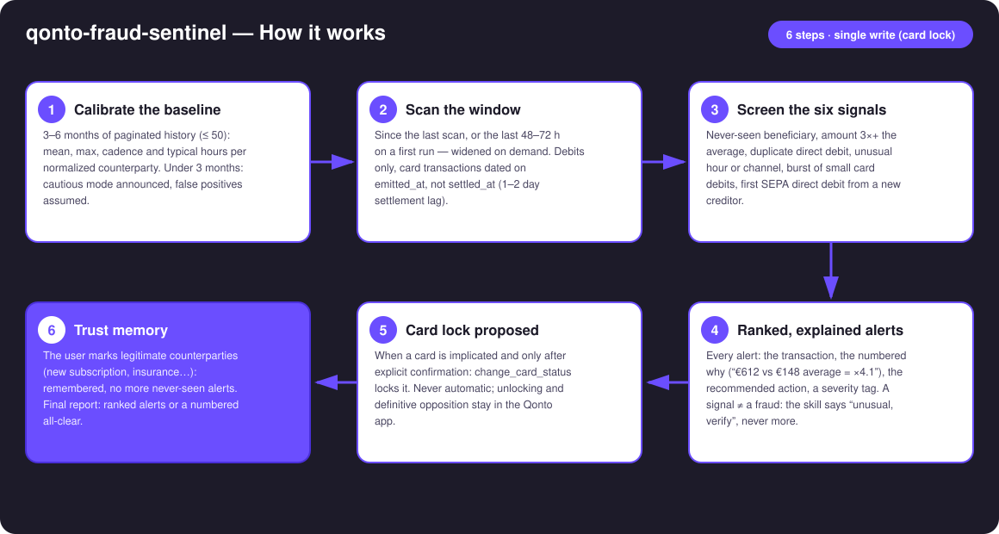
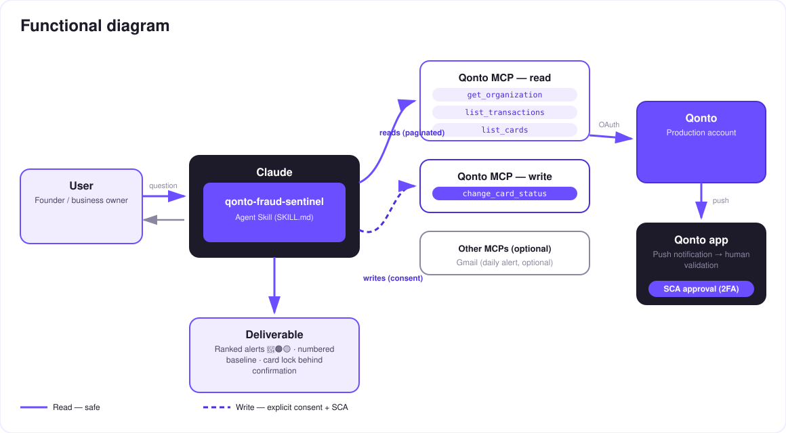

The account's bodyguard — 30 seconds every morning, the latest transactions screened against a numbered baseline.
Fraudulent or abnormal debits usually get discovered too late — on the statement, or never. The skill screens the latest transactions against a baseline built from the account's real history:
Never-seen beneficiary, amount 3×+, duplicate debit, unusual hour/channel, small-debit burst (stolen-card testing), first SEPA from a new creditor.
The transaction, the numbered why ("€612 vs €148 average = ×4.1"), the recommended action, a severity tag 🔴🟠🟡.
The skill says "unusual, worth verifying", never "fraud detected". False positives are assumed — trusted counterparties are marked in one message.
A card lock proposed when a card is implicated, executed only after explicit confirmation. Unlocking and opposition: in the app.
| Prerequisite | Detail | Required |
|---|---|---|
| Qonto production account | Adapts to any organization — get_organization first, nothing hardcoded | ✅ |
| Country | Behavioral, SEPA-universal signals: identical across all Qonto countries (FR, DE, ES, IT, AT, NL, BE, PT) — only wording adapts | ℹ️ detected |
| Qonto MCP connected | Official connector (claude.ai / Claude Desktop), OAuth login | ✅ |
| ≥ 3 months of history | Below that: cautious mode announced — thinner baseline, more false positives, tentative wording (3–6 months to calibrate) | ⭕ recommended |
| Gmail MCP | Optional enrichment: a daily digest email draft — detected dynamically, the core runs without it | ⭕ optional |

emitted_at, not settled_at: the 1–2 day settlement lag would corrupt duplicate and timing detection
The security model, not a limitation: reads are risk-free; the write is a card lock — reversible, proposed in reaction to a card alert, executed only after explicit confirmation in the conversation. Unlocking, definitive opposition, SEPA mandate revocation and card replacement stay in the Qonto app. No money moves, under any scenario.
| Signal | Criterion (numbered baseline) | Recommended action |
|---|---|---|
| Never-seen beneficiary | First outgoing occurrence of a counterparty over 3–6 months | Verify — a legitimate new supplier? Mark it trusted |
| Unusual amount | ≥ 3× that counterparty's average (or the category's, when new) | Check the matching invoice / contract |
| Duplicate debit | Same counterparty, same amount (±1 %), 1–5 days apart | Verify; dispute the duplicate with the creditor or via the app |
| Unusual hour / channel | Card payment at an hour never seen for that counterparty; a never-used operation type | Verify; suspicious card → lock proposed |
| Small-debit burst | ≥ 3 small debits (bottom decile or < €10) within minutes/hours | Stolen-card testing pattern → lock proposed (change_card_status) |
| First SEPA from a new creditor | First direct debit from a creditor absent from the baseline (a mandate just got used) | Check the mandate; oppose via the app if unrecognized |
| Output | Format | When |
|---|---|---|
| Conversation reply | Markdown alert table (transaction · signal · baseline · action · severity) or a numbered "all clear" | Always — the baseline |
| Morning report | Compact HTML file/artifact: ranked alerts, baseline, card status | When the host renders files (claude.ai artifacts, Claude Desktop, Claude Code); automatic fallback to the table |
| Email digest | Gmail draft of the daily scan | Only when a Gmail MCP is detected — optional |
The ≤ 3-minute demo attached to the PR walks through: the problem → the baseline → the signals in action → the morning routine, live (a "first SEPA from a never-seen creditor, €249" alert — it's the new insurance contract, trust-marked in one message) → wrap-up. It runs live on a real production account.
| Idea | Effort | Note |
|---|---|---|
| Scheduled scan (the morning prompt becomes an automated routine) | Low | The daily check runs itself |
| User-tunable thresholds (×2, ×5, amount floor) | Low | The baseline stays the smart default |
| Per-counterparty 12-month risk score | Medium | Reuses the baseline engine |
| Telegram/Slack alert when the MCP is present | Low | Same optional multi-MCP logic as Gmail |
change_card_status without explicit confirmation in the current conversation; never presented as done if the call failedemitted_atSee also: qonto-supplier-detective (skill #13) — historical supplier invoices and money recovery. Sentinel is its security-focused sibling: real-time and daily.